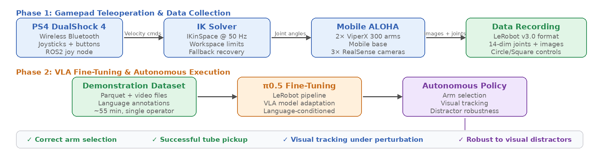
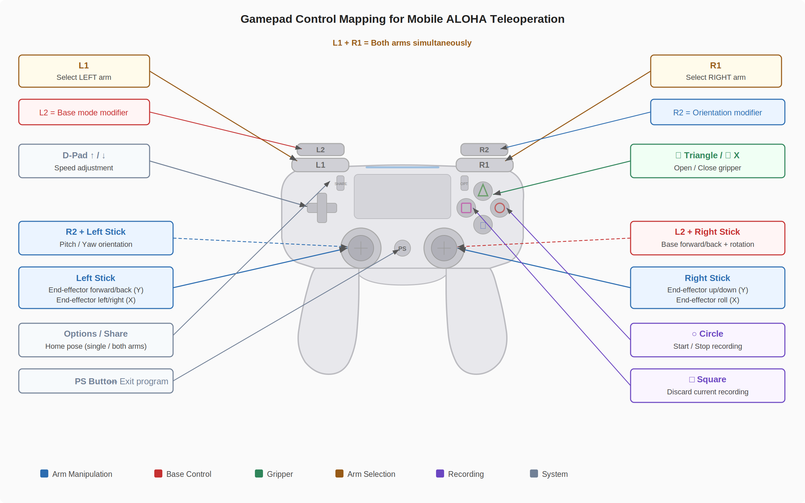

Our system maps gamepad inputs to Cartesian end-effector velocities, solved via inverse kinematics at 50 Hz for each arm of the Mobile ALOHA platform. Demonstrations are recorded in LeRobot v3.0 format and used to fine-tune π0.5 for autonomous execution.

Gamepad Control Mapping
The controller uses a modifier-based design that balances workload across both hands. Position control (left stick) and height/roll (right stick) are distributed by default, while L2 and R2 modifiers allow either hand to temporarily take on base or orientation control.

Safety Features
The system includes workspace limits (distance-dependent Cartesian bounds), IK fallback with automatic recovery after consecutive failures, per-joint limit validation with safety buffers, and acceleration-limited base control behind an L2 deadman switch.